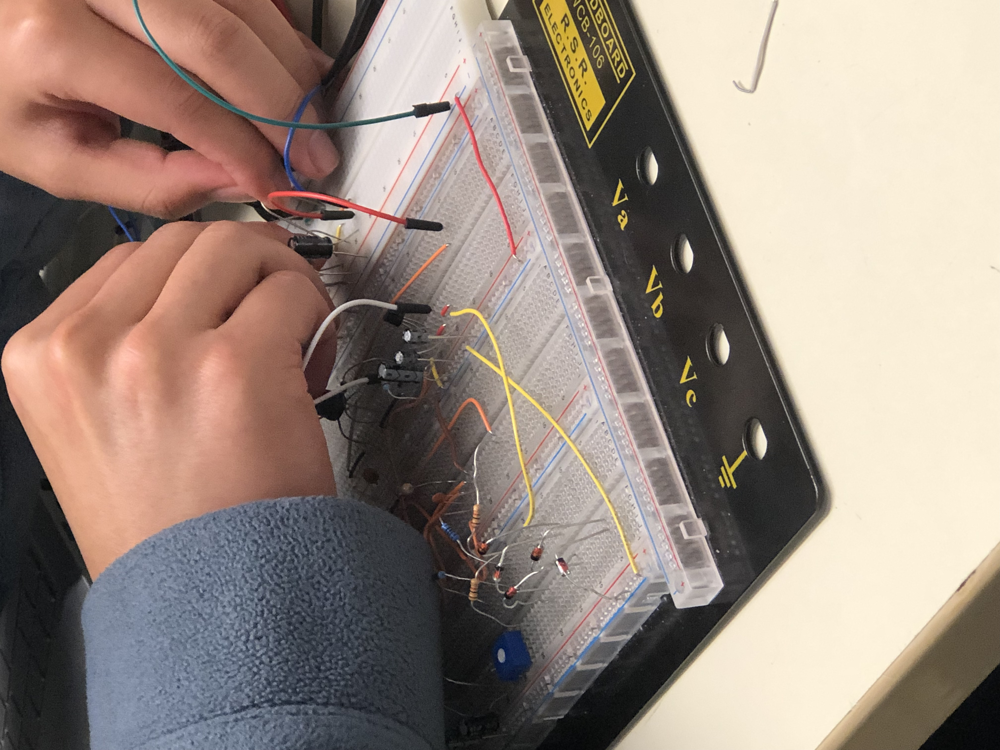
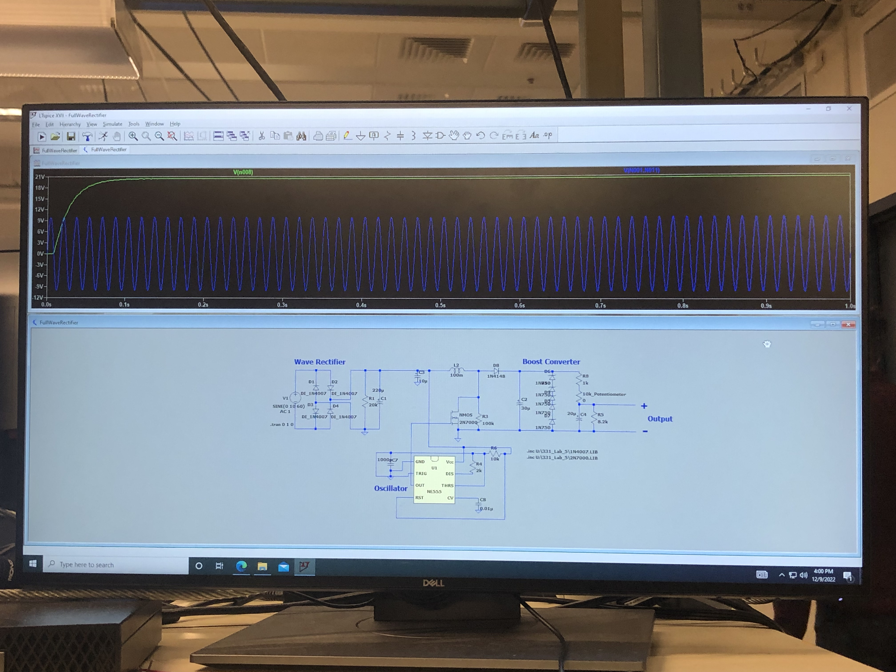

Analog Circuit Design, Hardware Simulation, LTSpice, Oscilloscopes

Wires, capacitors, diodes, inductors, and more were used to build the converter.
The final project for my analog devices class was to design, simulate, and then build an AC to DC variable boost converter.
The circuit was able to produce a 10V to 20V DC output from a 10V input from an AC
transformer.
The full circuit consisted of several subcircuits including a full-wave rectifier, a boost converter, potentiometer for
changing load voltage, and load.
We had to meet a lot of requirements, e.g., ripple voltage of the output had to be less than 100mv, the clock used to
power our transistor in the boost converter subcircuit had to be running at 40kHz, and much, much more. The simulation
was built using LTSpice, and once all the required values were achieved in simulation, the design was built on a breadboard.
Using oscilloscopes from a lab station at the University of Washington's ECE building, the desired output values were verified
along with values for each subcircuit.

An LTSPice simulation showing an AC input wave of 10V being converted to a DC output wave of 20V.
During the DubHacks 2022 hackathon, I partnered with other three students that I had just met to work on a project using
T-Mobile's then unreleased DevEdge IoT kit. We were felt very lucky to have the opportunity to work with such
new, interesting technology! During the span of 24 hours, we came up with the idea to use the kit's temperature sensor,
ambient light sensor, and GNSS to create a device which would help users find the ideal conditions for plant growth.
Although we were not able to get it fully working, we learned a lot about networking using LTE, project planning, and
working with unfamiliar SDKs.
A picture of the T-Mobile DevEdge kit, from their website.
Conway's Game of Life on DE1 FPGA Board
FPGA, Verilog HDL, Quartus Hardware Simulation, Finite State Machines
A demo video showcasing Conway's Game of Life running on a 16x16 LED board.
For a my final project for one of my digital circuits classes, I chose to simulate
Conway's Game of Life
algorithm on an FPGA using a 16x16 array of LEDs. Conway's Game of Life is an algorithm
which simulates constantly evolving automotons. First, I designed my logic using
a finite state machine graph. Then, I programmed the board using Verilog (a hardware
description language). Afterwards, I used Quartus to simulate and verify my signals
before finally running the code on the LED display. The result is both visually appealing
and intriguing to examine logically. Users can draw a starting configuration using the development board's
buttons and switches.
Conway's Game of Life on DE1 FPGA Board
FPGA, Verilog HDL, Quartus Hardware Simulation, Algorithmic State Machines, Python
Another digital circuits project that I chose to create was an audio frequency visualizer.
The visualizer drives a monitor display which draws circles with radius corresponding to the frequency
of different audio files. For fun, I decided to make it able to draw different colors of circles.
It grabs data from a FIFO buffer which contains audio frequency values. These frequency
values were generated from a audio files using a custom Python script. The development process was
essentially the same as my Conway's Game of Life project, but instead used an algorithmic state machine
design instead of a finite state machine. The switches are used to change the audio file being input to
the algorithm, and also to control the color of the pixels being drawn.
My final project for my embedded systems class was a nap gadget that I built with my lab partner.
We used FreeRTOS to manage the running, sleeping, and killing of processes. Processes included getting input from
an SPI thumbstick which I wrote the driver for, modifying values on an LCD display, changing the frequency of the speaker
which we also write a custom driver for, and getting input from a GPIO keypad. Users can set an alarm timer using the thumbstick, and then once the timer
expires the speaker will play "Never Gonna Give You Up" by Rick Astley (yes, we did Rickroll our proffessor). Entering the correct passcode on the
keypad will stop the song from playing. Information about the timer, music speed, and passcode are printed on the LCD display.
The thumbstick can also modify the speed at which the song is played. The entire project is coded in C onto an Arduino MEGA microcontroller.